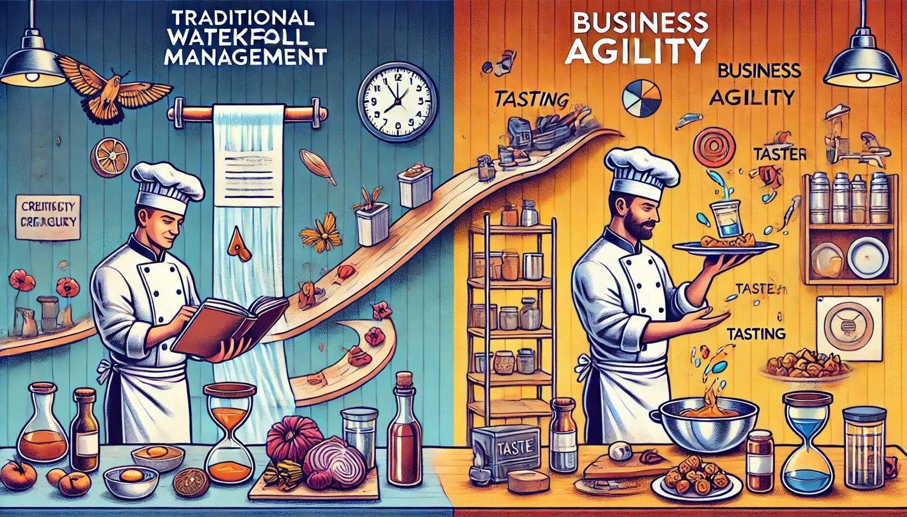

Waterfall management is a strict recipe, while agility is improvisational cooking.

1 The secret
Is there a door to an unknown world hiding in plain sight?
Imagine your words as travelers, journeying through the vast expanse of your listeners’ minds. All too often, they find themselves lost, unable to find their destination or make a lasting impression. But what if there was a way to guide your words, like a seasoned explorer, leading them to the very heart of your listeners’ understanding? What if it was a matter of simple technique—one you can learn?
In a landscape where information is often forgotten as quickly as it’s learned, there’s a powerful connector that bridges the gap between the known and the unknown. It doesn’t just make ideas clear; it reshapes how we think about them.
I am talking about generative metaphors.
By linking new ideas to familiar concepts, generative metaphors unlock the doors of memory, making your message not only accessible but also unforgettable. They’re an exercise in forced prioritization: if you had to distill your message into one sentence, what would it be? By making that sentence simple but meaningful, you open a door for your audience to see the idea in a new light. Get ready to step into the role of a master storyteller, as we uncover the secrets behind the most powerful tool in the art of effective communication.
2 Generative Metaphors connect the known to the unknown
Generative metaphors are more than quick comparisons; they serve as cognitive tools that build on what’s already in your audience’s mind—tapping into the “flags” or familiar concepts people carry. When you link a new, complex idea to something they already know, it sticks.
These metaphors are called “generative” because they spark fresh perspectives and foster novel ways to solve problems. As Donald Schön suggested, they reshape perception and open the door to new insights. Steve Jobs demonstrated their impact by describing a personal computer as a “bicycle for the mind.” Not only did the phrase sound compact and catchy, it carried substance—showing how a computer could amplify human potential.
3 Metaphors, didn’t we do that in school?
3.1 What’s the difference to normal metaphors?
While both normal (or conventional) metaphors and generative metaphors involve drawing parallels between seemingly unrelated concepts, their purposes and effects differ significantly.
3.1.1 Normal Metaphors
- Often used for descriptive purposes: They clarify or highlight aspects of a concept by relating it to something familiar.
- Widely recognized: For example, “time is money.” People grasp these immediately because they’re common.
- Reinforce existing thoughts: They rarely challenge us to see a concept in a new way.
3.1.2 Generative Metaphors
- Spark new thinking: They connect disparate domains and invite deeper insights.
- More unique or original: They require greater engagement and reflection from the audience.
- Transform perspectives: They’re provocative, connecting, and reshaping how we perceive a concept—like Disney calling employees “cast members,” subtly redefining roles and expectations.
Let’s sum it up:
- Normal Metaphors: Illustrative, common, reinforcing
- Generative Metaphors: Provocative, connecting, transformative
4 My secret recipe to find your doors
Crafting generative metaphors is an exercise in saying more with less—creating a sound bite that carries real weight. Here are some steps:
Identify the target concept
Pinpoint the complex, abstract, or unfamiliar idea you want to communicate.Find a source domain
Choose a familiar concept or “flag” in your audience’s mind. By connecting to what they already know, you ensure your metaphor has immediate relevance.Discover shared attributes
Look for overlapping qualities between your target concept and the source domain. These common traits form the heart of your metaphor.Develop the metaphor
Distill your thoughts into a simple but meaningful sentence—forced prioritization at its best. Make it concrete; if it doesn’t carry a relevant core, it won’t resonate.Test the metaphor
See if it sparks fresh insights and makes the complex more accessible. If not, refine or choose a new source domain.Provide context
Explain the reasoning behind the metaphor, ensuring your audience grasps its core message and why it matters.
Remember: simplicity and concreteness win. People forget sprawling ideas but remember concise, tangible images. Avoid empty sound bites; aim for what one might call a sound bite with substance.
Let’s get some practice and look at two examples!
5 Let’s get some practice and look at two examples!
5.1 Example 1: Business Agility vs. Traditional Waterfall

Let’s craft a generative metaphor using the target concept of business agility and the source domain of traditional waterfall project management.
- Identify the target concept: Business agility
- Find a source domain: Traditional waterfall project management
- Discover shared attributes: Both involve planning and execution, but differ in speed and flexibility.
- Develop the metaphor: “If traditional waterfall management is like following a strict recipe, business agility is like cooking with the freedom to adjust ingredients on the fly.”
- Test the metaphor: Does this comparison highlight the strictness of waterfall vs. the adaptive nature of agility?
- Provide context: Explain how business agility allows for ongoing adjustments, while waterfall relies on a rigid sequence of steps.
5.2 Example 2: high performance teams
Let’s create a generative metaphor using the target concept of high-performance teams that take ownership and responsibility, and the source domain of teams as a resource.
- Identify the target concept: Teams that take ownership and responsibility
- Find a source domain: Teams as a resource
- Discover shared attributes: Both involve collaboration, but high-performance teams emphasize responsibility and exceptional results.
- Develop the metaphor: “If a basic team is just a well-stocked toolbox, a high-performance team is a fine-tuned machine where every part works seamlessly toward excellence.”
- Test the metaphor: Does it underscore the difference between viewing teams as mere resources and recognizing their potential for high-level performance?
- Provide context: Show how high-performance teams go beyond just having the necessary tools; they actively take ownership, solve problems, and achieve impactful results.
Like all effective metaphors, these examples anchor new insights to familiar ideas. They help people see the difference between rigid and adaptive, or between basic functionality and high-performance potential. When done right, generative metaphors open doors to new worlds of understanding—one clear, powerful sentence at a time.